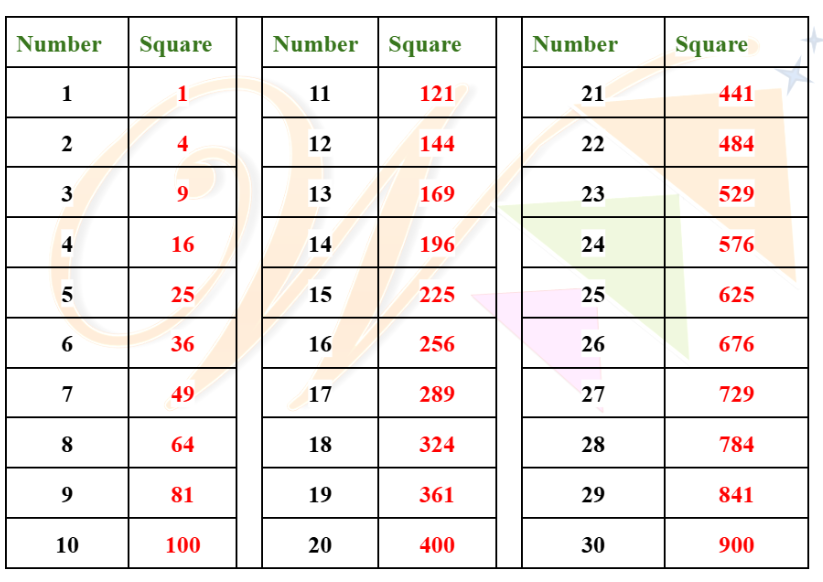

Squares
If a number is multiplied by itself, the product is called the square of that number.
Example:
The square of 4 is 4 ✕ 4 = 16.
We denote it as 4² (read as "four squared").
Perfect squares(Square numbers):
A natural number is called a perfect square or square of a number if it is the square of some natural number.
Example:
1, 4, 9 are called perfect squares as they are squares of numbers 1, 2 and 3 respectively.
Perfect Squares(1-20)
Properties of Squares:
-
Squares of odd numbers are always odd.
Example: 1² = 1, 3² = 9, 5² = 25 -
Squares of even numbers are always even.
Example: 2² = 4, 4² = 16, 6²= 36 -
The square of negative numbers is also positive.
Example: (-2)² = 4, (-7)² = 49. -
A number ending with an odd number of zeros is never a perfect square.
Example: 4000, 250, 780 -
A number ending with 2, 3, 7 or 8 is never a perfect square.
Example: 92, 133, 258 -
Numbers between Squares: Total numbers between two consecutive squares i.e, n² and (n+1)² is given as 2n.
Example: Total numbers between 3² and 4² is 2 x 3 = 6. Total numbers between 9² and 10² = 2 x 9 = 18 -
Square of a natural Number: Square of a natural number ‘n’ can be expressed as the sum of first n odd numbers.
Example:
1² = 1 (First odd number)
2² = 1+3 (Sum of first two odd numbers)
3² = 1+3+5 (Sum of first three odd numbers)
4² = 1+3+5+7 (Sum of first four odd numbers) -
The difference between squares of two consecutive numbers is equal to the sum of the numbers.
i.e, if two consecutive numbers are n and n+1 then, (n+1)² - n² = 2n + 1
Example:
3² - 2² = 5= 3 + 2
4² - 3² = 7= 4 + 3
5² - 4² = 9 = 5 + 4 -
Pythagorean Triplets are sets of three whole numbers (integers) that satisfy the Pythagorean Theorem: a² + b² = c²
Example: 5, 12, 13 are pythagorean triplets as 5² + 12² = 13² (25 + 144 = 169)
How to find pythagorean triplet:
To find the Pythagorean triplets, the following formula is used. If a, b are two sides of the triangle and c is the hypotenuse, then, a, b, and c can be found out using this:
- a = m2 - n2
- b = 2mn
- c = m2 + n2
Also, p.a, p.b and p.c are considered as the Pythagorean triple.
Notes:
- m, n and p are any two positive integers
- m > n
- m and n are coprime and both should not be odd numbers.
-
EXAMPLE: If one of the pythagorean triplet is 4, find the other two triplets.
Solution: 2mn = 4 ⇒2(2)(1) = 4 (Assuming m and n(m>n): to be 2 and 1)
m2 - n2 = 22 - 12 = 4 - 1= 3
m2 + n2 = 22 + 12 = 4 + 1= 5
∴ The pythagorean triplets are: (3, 4, 5).
Also (3, 4, 5) multiplied by any number will result in a pythagorean triplet:
3 x (3, 4, 5) = (9, 12, 15) which is also a pythagorean triplet. -
EXAMPLE: If one of the pythagorean triplet is 12, find the other two triplets.
Solution: 2mn = 12 ⇒2(3)(2) = 12 (assuming m and n(m>n): to be 3 and 2)
m2 - n2 = 32 - 22 = 9 - 4= 5
m2 + n2 = 32 + 22 = 9 + 4= 13
∴ The pythagorean triplets are: (5, 12 ,13)
Also (5, 12, 13) multiplied by any number will result in a pythagorean triplet:
2 x (5, 12, 13) = (10, 34, 26) which is also a pythagorean triplet.
TRICK (When an odd pythagorean triplet is given):
If one number in a Pythagorean triple is an odd number, represented by 'n', then the other two numbers can be found using: [n, (n²/2 - 0.5), (n²/2 + 0.5)]
Example:
If 'n' (the odd number) is 3, then the Pythagorean triple is:
- 3
- (3²/2 - 0.5) = (9/2 - 0.5) = 4.5 - 0.5 = 4
- (3²/2 + 0.5) = (9/2 + 0.5) = 4.5 + 0.5 = 5
Therefore, the Pythagorean triple is (3, 4, 5).
TRICK:
A Pythagorean triplet can be generated using the formula: 2m, m² - 1, m² + 1, where 'm' is any positive integer. (May not be applicable in all cases)
-
EXAMPLE: If one of the pythagorean triplet is 12 find the other two triplets.
Solution: 2m = 12 ⇒m = 6.
m² - 1 = 6² -1 = 36 - 1= 35
m² + 1 = 6² + 1= 36 + 1= 37.
∴ The pythagorean triplets are: (12, 35, 37) -
EXAMPLE: If one of the pythagorean triplet is 5 find the other two triplets.
Solution: m² + 1 = 5
m² = 5 - 1= 4
m = 2
2m = 2 x 2 ⇒m =4.
m² - 1 = 2² - 1 = 4 - 1= 3
∴ The pythagorean triplets are: (3, 4, 5)